소방설비산업기사(전기) (2015-03-08 기출문제)
1과목: 소방원론
1. 소방시설의 분류에서 다음 중 소화설비에 해당하지 않는 것은?
- 스프링클러설비
- 물분무소화설비
- 옥내소화전설비
- 연결송수관설비
(정답률: 89%)

2. 과산화수소의 성질로 틀린 것은?
- 비중이 1보다 작으며 물에 녹지 않는다.
- 산화성물질로 다른 물질을 산화시킨다.
- 불연성 물질이다.
- 상온에서 액체이다.
(정답률: 65%)
3. 가연성 물질이 되기 위한 조건으로 틀린 것은?
- 열전도율이 작아야 한다.
- 공기와 접촉면적이 커야 한다.
- 산소와 친화력이 커야 한다.
- 활성화에너지가 커야 한다.
(정답률: 80%)
4. 0℃의 얼음 1g이 100℃의 수증기가 되려면 몇 cal의 열량이 필요한가? (단, 0℃ 얼음의 융해열은 80cal/g이고 100℃ 물의 증발잠열은 539cal/g 이다.)
- 539
- 719
- 939
- 1119
(정답률: 84%)
5. 다음 중 착화온도가 가장 높은 물질은?
- 황린
- 아세트알데히드
- 메탄
- 이황화탄소
(정답률: 54%)
6. 할로겐화합물 소화약제의 주된 소화원리에 해당하는 것은?
- 연쇄반응의 억제
- 흡열 산화반응
- 분해ㆍ냉각 작용
- 흡착에 의한 승화작용
(정답률: 83%)
7. 프로판 가스 44g을 공기 중에 완전연소 시킬 때 표준상태를 기준으로 약 몇 L의 공기가 필요한가? (단, 가연가스를 이상기체로 보며, 공기는 질소 80%와 산소 20%로 구성되어 있다.)
- 112
- 224
- 448
- 560
(정답률: 48%)
8. 위험물안전관리법령상 위험물의 유별 성질에 관한 연결 중 틀린 것은?
- 제2류 위험물 : 가연성 고체
- 제4류 위험물 : 인화성 액체
- 제5류 위험물 : 자기반응성 물질
- 제6류 위험물 : 산화성 고체
(정답률: 86%)
9. B급 화재는 다음 중 어떤 화재를 의미하는가?
- 금속화재
- 일반화재
- 전기화재
- 유류화재
(정답률: 92%)
10. Halon 1211의 화학식으로 옳은 것은?
- CF2BrCl
- CFBrCl2
- C2F4Br2
- CH2BrCl
(정답률: 79%)
11. 요리용 기름이나 지방질 기름의 화재 시 가연물과 결합하여 비누화 반응을 일으켜 질식소화와 재발화 억제효과를 나타낼 수 있는 것은?
- Halon 104
- 물
- 이산화탄소소화약제
- 1종 분말소화약제
(정답률: 74%)
12. 피난대책의 일반적 원칙으로 틀린 것은?
- 2방향의 피난통로를 확보한다.
- 피난경로는 간단 명료하게 한다.
- 피난설비는 고정설비를 위주로 설치한다.
- 원시적인 방법보다는 전자설비를 이용한다.
(정답률: 89%)
13. 다음 소화약제의 주성분 중 담홍색 또는 황색으로 착색하여 사용하도록 되어있는 소화약제는?
- 탄산나트륨
- 제1인산암모늄
- 탄산수소나트륨
- 탄산수소칼륨
(정답률: 76%)
14. 장기간 방치하면 습기, 고온 등에 의해 분해가 촉진되고 분해열이 축적되면 자연발화 위험성이 있는 것은?
- 셀룰로이드
- 질산나트륨
- 과망간산칼륨
- 과염소산
(정답률: 86%)
15. 다음 물질 중 연소범위가 가장 넓은 것은?
- 아세틸렌
- 메탄
- 프로판
- 에탄
(정답률: 75%)
16. 점화원의 형태별 구분 중 화학적 점화원의 종류로 틀린 것은?
- 연소열
- 용해열
- 분해열
- 아크열
(정답률: 84%)
17. 인화성 액체의 소화방법으로 틀린 것은?
- 공기차단 또는 연소물질을 제거하여 소화한다.
- 포말, 분말, 이산화탄소, 할로겐화물소화제 등을 사용한다.
- 알코올과 같은 수용성 위험물은 특수한 안정제를 가한 포소화약제 등을 사용한다.
- 물, 건조사 및 금속화재용 분말소화기를 사용하여 소화한다.
(정답률: 70%)
18. 칼륨이 물과 작용하면 위험한 이유로 옳은 것은?
- 물과 격렬히 반응하여 가연성의 수소가스를 발생하기 때문
- 물과 격렬히 반응하여 발열하고 가연성의 일산화탄소를 생성하기 때문
- 물과 흡열반응하여 유독성 가스를 생성하기 때문
- 물과 흡열반응하며 자기연소가 서서히 진행되기 때문
(정답률: 85%)
19. 실내 연기의 이동속도에 대한 일반적인 설명으로 가장 적절한 것은?
- 수직으로 1m/s, 수평으로 5m/s 정도이다.
- 수직으로 3m/s, 수평으로 1m/s 정도이다.
- 수직으로 5m/s, 수평으로 3m/s 정도이다.
- 수직으로 7m/s, 수평으로 3m/s 정도이다.
(정답률: 79%)
20. 정전기 화재사고의 예방대책으로 틀린 것은?
- 제전기를 설치한다.
- 공기를 되도록 건조하게 유지시킨다.
- 접지를 한다.
- 공기를 이온화한다.
(정답률: 85%)
2과목: 소방전기회로
21. 회로에서 흐르는 전류 I는 몇 A인가?(오류 신고가 접수된 문제입니다. 반드시 정답과 해설을 확인하시기 바랍니다.)
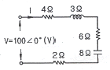
- 1.7+j2.96
- 1.7-j2.96
- 7.1+j2.96
- 7.1-j2.96
(정답률: 39%)
22. 3상 유도 전동기의 출력이 7.5kW, 전압 200V, 효율 88%, 역률 87%일 때 이 전동기에 유입되는 선전류는 약 몇 A 인가?
- 11
- 28
- 49
- 56
(정답률: 57%)
23. 반지름이 1m인 도체구에 전하 Q(C)을 줄 때, 도체구 1개의 정전용량은 몇 μF인가?
- 9×10-3
- 9×10-4
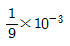
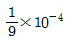
(정답률: 59%)
24. PID동작에 대한 설명으로 옳은 것은?
- 사이클링을 제거할 수 있으나 오프셋이 생기게 된다.
- 응답속도는 빨리할 수 있으나 오프셋이 제거되지 않는다.
- 사이클링과 오프셋이 제거되고 응답속도가 빠르며 안정성이 있다.
- 오프셋은 제거되나 제어동작에 큰 부동작 시간이 있으면 응답이 늦어지게 된다.
(정답률: 77%)
25. 터널다이오드를 사용하는 목적으로 틀린 것은?
- 개폐작용
- 증폭작용
- 발진작용
- 정전압정류작용
(정답률: 61%)
26. 회로에서 a-b 단자에 200V를 인가할 때 저항 2Ω에 흐르는 전류는 몇 A인가?
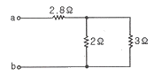
- 40
- 30
- 20
- 10
(정답률: 58%)
27. 평행왕복 도체에 전류가 흐를 때 발생하는 힘의 크기와 방향은? (단, 두 조체 사이의 거리는 r(m)이다.)
- 1/r에 비례, 반발력
- r에 비례, 흡인력
- 1/r2에 비례, 반발력
- r2에 비례, 흡인력
(정답률: 46%)
28. 바리스터의 주된 용도로 옳은 것은?
- 온도 보상
- 출력전류 조절
- 전압 증폭
- 서지전압에 대한 회로 보호
(정답률: 80%)
29. 다음 그림기호의 명칭으로 옳은 것은?
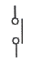
- 계전기 접점
- 수동 접점
- 시간지연 접점
- 기계적 접점
(정답률: 67%)
30. 잔류편차가 있는 제어계로 P제어라고 하는 것은?
- 비례제어
- 미분제어
- 적분제어
- 비례적분미분제어
(정답률: 73%)
31. JFET(접합형 전계효과 트랜지스터)에 비교할 때 MOSFET(금속 산화막 반도체 전계효과 트랜지스터)의 특성으로 틀린 것은?
- 열 폭주현상을 보인다.
- 산화 절연막을 가지고 있어서 큰 입력저항을 가지고 게이트 전류가 거의 흐르지 않는다.
- 2차 항복이 없다.
- 안정적이다.
(정답률: 63%)
32. 3상 유도전동기가 회전하는 기본적인 원리는?
- 2전동기설
- 보론델 법칙
- 전자유도작용
- 표피현상
(정답률: 83%)
33. 3상 유도전동기의 1차 권선의 결선을 △결선에서 Y결선으로 바꾸면 기동토크는 약 몇 % 로 되는가?
- 31
- 32
- 33
- 35
(정답률: 79%)
34. 고유저항 ρ, 길이 l, 지름 D인 전선의 저항은?
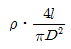
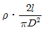
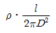
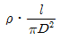
(정답률: 54%)
35. “회로망의 임의의 접속점에 유입하는 여러 전류의 총합은 0이다.” 라고 하는 법칙은?
- 쿨롱의 법칙
- 옴의 법칙
- 패러데이의 법칙
- 키르히호프의 법칙
(정답률: 77%)
36. 다이오드를 사용한 정류회로에서 여러 개의 다이오드를 직렬로 연결하여 사용하면?
- 다이오드를 높은 주파수에서 사용할 수 있다.
- 부하 출력의 맥동율을 감소시킬 수 있다.
- 다이오드를 과전압으로부터 보호할 수 있다.
- 다이오드를 과전류로부터 보호할 수 있다.
(정답률: 68%)
37. 다음은 회로의 전압, 전류를 측정하기 위한 전류계, 전압계의 연결방법을 설명한 것이다. ㉠과 ㉡에 들어갈 내용으로 옳은 것은?
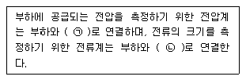
- ㉠ 직렬, ㉡ 직렬
- ㉠ 병렬, ㉡ 병렬
- ㉠ 직렬, ㉡ 병렬
- ㉠ 병렬, ㉡ 직렬
(정답률: 81%)
38. 220V전원에 1.2kW의 선풍기를 접속하니 6A의 전류가 흘렸다. 이 선풍기의 무효율은 약 몇 % 인가?
- 11
- 42
- 55
- 85
(정답률: 49%)
39. 제어장치의 출력인 동시에 제어대상의 입력으로 제어장치가 제어대상에 가하는 제어신호는?
- 제어량
- 조작량
- 동작신호
- 궤환신호
(정답률: 68%)
40. 그림과 같은 계전기 접점회로의 논리식으로 옳은 것은?
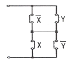
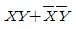
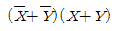
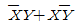
- XY
(정답률: 55%)
3과목: 소방관계법규
41. 칼륨, 나트륨, 알킬알루미늄 등과 같은 위험물의 성질은?
- 산화성 고체
- 자기반응성 물질
- 자연발화성 물질 및 금수성 물질
- 인화성 액체
(정답률: 75%)
42. 업무상 과실로 제조소 등에서 위험물을 유출ㆍ방출 또는 확산시켜 사람의 생명ㆍ신체 또는 재산에 대하여 위험을 발생시킨 사람에 해당하는 벌칙 기준은?(관련 규정 개정전 문제로 여기서는 기존 정답인 4번을 누르면 정답 처리됩니다. 자세한 내용은 해설을 참고하세요.)
- 5년 이하의 금고 또는 1000만원 이하의 벌금
- 5년 이하의 금고 또는 2000만원 이하의 벌금
- 7년 이하의 금고 또는 1000만원 이하의 벌금
- 7년 이하의 금고 또는 2000만원 이하의 벌금
(정답률: 75%)
43. 소방기관이 소방업무를 수행하는데에 필요한 인력과 장비 등에 관한 기준은 어느 령으로 정하는가?(관련 규정 개정전 문제로 여기서는 2번을 누르면 정답 처리 됩니다. 자세한 내용은 해설을 참고하세요.)
- 대통령령
- 총리령
- 시ㆍ도의 조례
- 국토교통부장관령
(정답률: 72%)
44. 산업안전기사 또는 산업안전산업기사 자격을 취득한 후 몇 년 이상 2급 소방안전관리대상물의 소방안전관리자로 근무한 실무경력이 있는 사람인 경우 1급 소방안전관리대상물의 소방안전관리자로 선임할 수 있는가?
- 1년 이상
- 1년 6개월 이상
- 2년 이상
- 3년 이상
(정답률: 61%)
45. 특정소방대상물에 사용되는 방염대상물품이 아닌 것은?
- 암막ㆍ무대막
- 창문에 설치하는 커튼류
- 전시용 합판
- 종이벽지
(정답률: 83%)
46. 소방안전관리대상물의 관계인이 소방안전관리자를 선임한 때에는 선임한 날부터 며칠 이내에 관할 소방본부장 또는 소방서장에게 신고하여야 하는가?
- 7일
- 14일
- 21일
- 30일
(정답률: 70%)
47. 함부로 버려두거나 그냥 둔 위험물의 소유자ㆍ관리자ㆍ점유자의 주소와 성명을 알 수 없어 필요한 명령을 할 수 없는 때에 소방본부장 또는 소방서장이 취하여야 하는 조치로 옳은 것은?
- 시ㆍ도지사에게 보고하여야 한다.
- 경찰서장에게 통보하여 위험물을 처리하도록 하여야 한다.
- 소속공무원으로 하여금 그 위험물을 옮기거나 치우게 할 수 있다.
- 소유자가 나타날 때까지 기다린다.
(정답률: 76%)
48. 화재예방과 화재 등 재해발생시 비상조치를 위하여 관계인이 예방규정을 정하여야 하는 제조소 등의 기준으로 틀린 것은?
- 이송취급소
- 지정수량 10배 이상의 위험물을 취급하는 제조소
- 지정수량 100배 이상의 위험물을 취급하는 옥외저장소
- 지정수량 150배 이상의 위험물을 취급하는 옥외탱크저장소
(정답률: 73%)
49. 물분무등소화설비를 설치하여야 하는 특정소방대상물이 아닌 것은?
- 주차용 건축물로서 연면적 800m2 이상인 것
- 기계식 주차장치를 이용하여 20대 이상의 차량을 주차할 수 있는 것
- 전산실로서 바닥면적이 300m2 이상인 것
- 항공기부품공장으로 연면적 100m2 이상인 것
(정답률: 50%)
50. 소방시설업의 업종별 등록기준 및 영업범위 중 소방시설 설계업에 대한 설명으로 틀린 것은? (단, 제연설비가 설치되는 특정소방대상물은 제외한다.)
- 일반소방시설설계업의 보조 기술인력은 1인 이상이다.
- 전문소방시설설계업의 주된 기술인력은 소방기술사 1인 이상이다.
- 일반소방시설설계업의 경우 소방설비기사도 주된 기술인력이 될 수 있다.
- 일반소방시설설계업의 영업범위는 연면적 50000m2 미만의 특정소방대상물에 설치되는 소방시설의 설계를 할 수 있다.
(정답률: 47%)
51. 문화재보호법의 규정에 의한 유형문화재와 지정문화재에 있어서는 제조소 등과의 수평거리를 몇 m 이상 유지하여야 하는가?
- 20
- 30
- 50
- 70
(정답률: 68%)
52. 소방기본법에서 국민의 안전의식과 화재에 대한 경각심을 높이고 안전문화를 정착시키기 위하여 소방의 날로 정하여 기념행사를 하는 날은 언제인가?
- 매년 9월 11일
- 매년 10월 20일
- 매년 11월 9일
- 매년 12월 1일
(정답률: 79%)
53. 소방관계법령에서 정한 연소 우려가 있는 건축물의 구조의 기준으로 해당되지 않는 것은?
- 건축물대장의 건축물 현황도에 표시된 대지경계선 안에 2이상인 건축물이 있는 경우
- 건축물의 내장재가 가연물인 경우
- 각각의 건축물이 2층 이상으로 다른 건축물 외벽으로부터 수평거리가 10m 이하인 경우
- 개구부가 다른 건축물을 향하여 설치되어 있는 경우
(정답률: 41%)
54. 화재 예방상 위험하다고 인정되는 행위를 하는 사람이나 소화활동에 지장이 있다고 인정되는 물건의 소유자 등에세 금지 또는 제한, 처리 등의 명령을 할 수 있는 사람은?
- 소방본부장
- 의무소방관
- 소방대장
- 시ㆍ도지사
(정답률: 43%)
55. 소방대라 함은 화재를 진압하고 화재, 재난ㆍ재해 그 밖의 위급한 상황에서의 구조ㆍ구급활동 등을 하기 위하여 구성된 조직체를 말한다. 그 구성원으로 틀린 것은?
- 소방공무원
- 소방안전관리원
- 의무소방원
- 의용소방대원
(정답률: 76%)
56. 정당한 사유 없이 소방특별조사 결과에 따른 조치명령을 위반한 자에 대한 벌칙으로 옳은 것은?(관련 규정 개정전 문제로 여기서는 기존 정답인 3번을 누르면 정답 처리 됩니다. 자세한 내용은 해설을 참고하세요.)
- 200만원 이하의 과태료
- 300만원 이하의 벌금
- 1년 이하의 징역 또는 1000만원 이하의 벌금
- 3년 이하의 징역 또는 1500만원 이하의 벌금
(정답률: 70%)
57. 아파트로 층수가 20층인 특정소방대상물에서 스프링클러 설비를 하여야 하는 층수는? (단, 아파트는 신축을 실시하는 경우이다.)
- 6층 이상
- 11층 이상
- 15층 이상
- 전층
(정답률: 69%)
58. 건축허가 등을 할 대 소방본부장 또는 소방서장의 동의를 미리 받아야 하는 대상이 아닌 것은?
- 연면적 200m2 이상인 노유자시설 및 수련시설
- 항공기격납고, 관망탑
- 차고ㆍ주차장으로 사용되는 층 중 바닥면적이 100m2 이상인 층이 있는 시설
- 지하층 또는 무창층이 있는 건축물로서 바닥면적이 150m2 이상인 층이 있는 것
(정답률: 63%)
59. 소방시설공사업 등록신청 시 제출하여야 할 자산평가액 또는 기업진단보고서는 신청일 전 최근 며칠 이내에 작성한 것이어야 하는가?
- 90일
- 120일
- 150일
- 180일
(정답률: 81%)
60. 소방시설공사업법에 다른 총리령으로 정하는 수수료 등의 납부 대상으로 틀린 것은?(관련 규정 개정전 문제로 여기서는 기존 정답인 1번을 누르면 정답 처리됩니다. 자세한 내용은 해설을 참고하세요.)
- 소방시설업의 기술자 변경신고를 하려는 사람
- 소방시설업을 등록하려는 사람
- 소방시설업자의 지위승계 신고를 하려는 사람
- 소방시설업 등록증을 재발급 받으려는 사람
(정답률: 62%)
4과목: 소방전기시설의 구조 및 원리
61. 자동화재속보설비의 속보기의 전원변압기 용량은?
- 최소사용전압에 연속하여 견딜 수 있는 것일 것
- 최대사용전압에 연속하여 견딜 수 있는 것일 것
- 최소사용전류에 연속하여 견딜 수 있는 것일 것
- 최대사용전류에 연속하여 견딜 수 있는 것일 것
(정답률: 50%)
62. 비상벨설비 또는 자동식 사이렌설비의 음향장치는 정격전압의 몇 % 전압에서 음향을 발할 수 있어야 하는가?
- 20
- 40
- 60
- 80
(정답률: 87%)
63. 누설전류가 흐르지 않았는데도 누전경보기가 경보를 발하였다. 원인으로 옳은 것은?
- 검출 누설전류의 설정값이 적합하지 않을 때
- 전류가 단선되었을 때
- 수신기가 고장일 경우
- 변류기가 고장일 경우
(정답률: 65%)
64. 무선통신보조설비에서 무선기가 접속단자의 설치기준으로 틀린 것은?
- 지상에서 유효하게 소방활동을 할 수 있는 장소 또는 수위실 등 상시 사람이 근무하고 있는 장소에 설치할 것
- 단자는 바닥으로부터 높이 0.8m 이상 1.5m 이하의 위치에 설치할 것
- 지상에 설치하는 접속단자는 보행거리 300m 이내마다 설치하고, 다른 용도로 사용되는 접속단자에서 3m 이상의 거리를 둘 것
- 단자의 보호함 표면에 “무선기 접속단자”라고 표시한 표지를 할 것
(정답률: 63%)
65. 예비전원을 내장하지 아니하는 비상조명등의 비상전원 설치기준으로 틀린 것은?
- 비상전원의 설치장소는 다음 장소와 방화구획을 할 것
- 비상전원을 실내에 설치하는 경우 그 실내에 이동식 비상조명등을 설치할 것
- 점검에 편리하고 화재 등으로 인한 피해를 받을 우려가 없는 곳에 설치할 것
- 상용전원으로부터 전력의 공급이 중단된 때에는 자동으로 비상전원으로부터 전력 공급을 받을 수 있도록 할 것
(정답률: 67%)
66. 복도통로유도등은 구부러진 모퉁이 및 보행거리 몇 m 마다 설치해야 하는가?
- 20
- 25
- 30
- 40
(정답률: 56%)
67. 유도표지의 설치기준으로 틀린 것은?
- 계단에 설치하는 것을 제외하고는 각 층마다 복도 및 통로의 각 부분으로부터 하나의 유도표지가지의 보행거리가 15m 이하가 되는 곳에 설치한다.
- 피난구 유도표지는 출입구 상단에 설치한다.
- 통로유도표지는 바닥으로부터 높이 80cm 이하의 위치에 설치한다.
- 주위에는 이와 유사한 등화ㆍ광고물ㆍ게시물 등을 설치하지 않는다.
(정답률: 69%)
68. 비상콘센트설비의 화재안전기준에서 규정하고 있는 고압의 정의로 옳은 것은?(관련 규정 개정전 문제로 여기서는 기존 정답인 4번을 누르면 정답 처리됩니다. 자세한 내용은 해설을 참고하세요.)
- 직류, 교류 모두 600V를 넘고 7000V 이하인 것
- 직류, 교류 모두 750V를 넘고 10000V 이하인 것
- 직류는 600V, 교류는 750V를 넘고 7000V 이하인 것
- 직류는 750V, 교류는 600V를 넘고 7000V 이하인 것
(정답률: 74%)
69. 소방설비의 종류의 비상전원 용량의 기준을 옳게 나타낸 것은?
- 비상콘센트 : 20분 이상 유효하게 작동시킬 수 있는 용량
- 비상조명등 : 30분 이상 유효하게 작동시킬 수 있는 용량
- 유도등 : 30분 이상 유효하게 작동시킬 수 있는 용량
- 무선통신보조설비의 증폭기 : 60분 이상 유효하게 작동시킬 수 있는 용량
(정답률: 67%)
70. 감지기의 설치 제외 장소로 옳은 것은?
- 천장 또는 반자의 높이가 20m 이상인 장소
- 파이프 덕트 등 이와 비슷한 장소로 2개층 마다 방화 구획된 것이나 수평단면적 10m2 이하인 장소
- 계단ㆍ경사로 및 에스컬레이터 경사로
- 엘리베이터 승강로ㆍ린넨슈트ㆍ파이프 피트 및 덕트
(정답률: 52%)
71. 누전경보기의 전원은 분전반으로부터 전용회로로 하고, 각 극에 개폐기 및 몇 A 이하의 과전류차단기를 설치 하여야 하는가?
- 10
- 15
- 20
- 30
(정답률: 80%)
72. 일시적으로 발생한 열, 연기 또는 먼지로 인해 감지기가 화재신호를 발신할 우려가 있는 장소에 대하여 자동화재탐지설비의 수신기는 축적 기능이 있는 것으로 설치해야 한다. 설치대상이 아닌 것은?
- 다신호방식의 감지기를 설치한 장소
- 감지기의 부착면과 실내바닥과의 거리가 2.3m 이하인 장소
- 지하층으로 환기가 잘되지 아니하는 장소
- 무창층으로 실내면적이 40m2 미만인 장소
(정답률: 51%)
73. 감도조정장치를 갖는 누전경보기에 있어서 감도조정장치의 조정범위는 최대치가 몇 A인가?
- 1
- 2
- 15
- 20
(정답률: 68%)
74. 자동화재탐지설비 발신기의 설치기준으로 틀린 것은?
- 스위치는 바닥으로부터 1.2m 이하의 높이에 설치한다.
- 특정소방대상물의 층마다 설치한다.
- 해당 특정소방대상물의 각 부분으로부터 하나의 발신기까지의 수평거리가 25m 이하가 되도록 한다.
- 발신기의 위치를 표시하는 표시등은 함의 상부에 설치하며 쉽게 식별할 수 있는 적색등으로 하여야 한다.
(정답률: 75%)
75. 공기관식 차동식분포형감지기의 설치기준에 대한 설명으로 옳은 것은?
- 공기관의 노출부분은 감지구역마다 15m 이상이 되도록 할 것
- 공기관과 감지구역의 각 변과의 수평거리는 1.0m 이하가 되도록 할 것
- 하나의 검출부분에 접속하는 공기관의 길이는 100m 이하로 할 것
- 검출부는 15°이상 경사되지 아니하도록 부착할 것
(정답률: 55%)
76. 비상콘센트용 풀박스 등은 방청도장을 한 것으로서 두께는 몇 mm 이상의 철판으로 해야 하는가?
- 1.0
- 1.2
- 1.6
- 2.5
(정답률: 72%)
77. 물분무소화설비의 비상전원을 자가발전설비 또는 축전지 설비로 설치하고자 할 때 그 설치기준으로 틀린 것은?
- 점검에 편리하고 화재 및 침수 등의 재해로 인한 피해를 받을 우려가 없는 곳에 설치할 것
- 물분무소화설비를 유효하게 30분 이상 작동할 수 있도록 할 것
- 상용전원으로부터 전력의 공급이 중단된 때에는 자동으로 비상전원으로부터 전력을 공급받을 수 있도록 할 것
- 비상전원의 설치장소는 다른 장소와 방화구획 할 것
(정답률: 70%)
78. 비상방송설비 부속회로의 전로와 대지 사이 및 배선 상호간의 절연저항은 1경계구역마다 직류 250V의 절연저항측정기로 측정하여 몇 MΩ 이상이 되어야 하는가?
- 20
- 10
- 5
- 0.1
(정답률: 73%)
79. 주방, 보일러실 등 다량의 화기를 취급하는 장소에 설치하는 정온식 감지기는 공칭작동온도가 최고주위온도보다 몇 ℃이상 높은 것을 설치하여야 하는가?
- 10
- 20
- 30
- 40
(정답률: 78%)
80. 지상 10층인 백화점에 설치하는 비상방송설비에는 그 설비에 대한 감시상태를 몇 분 이상 지속한 후 유효하게 10분 이상 경보할 수 있는 축전지설비를 설치하여야 하는가?
- 30
- 40
- 50
- 60
(정답률: 84%)